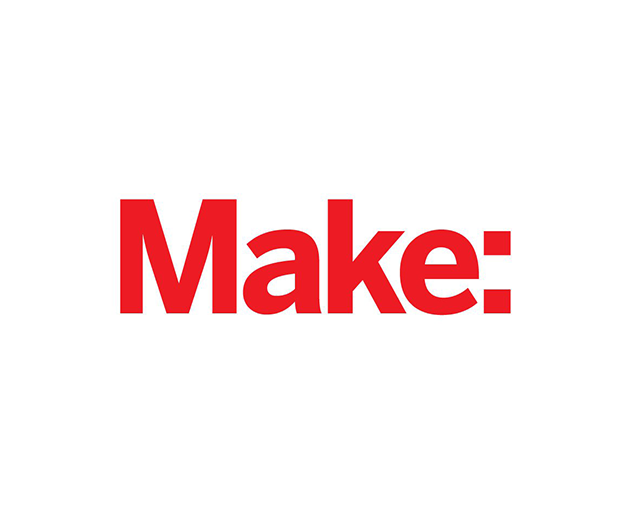
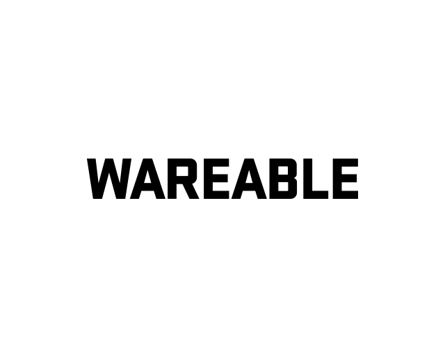
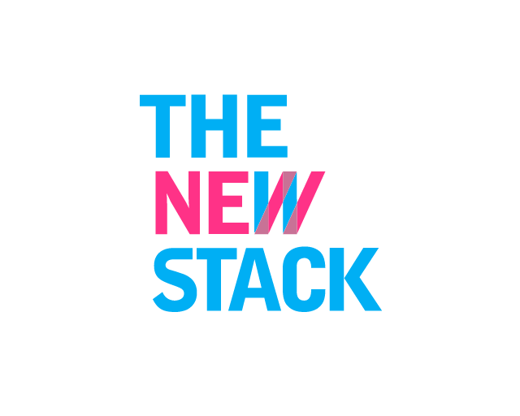
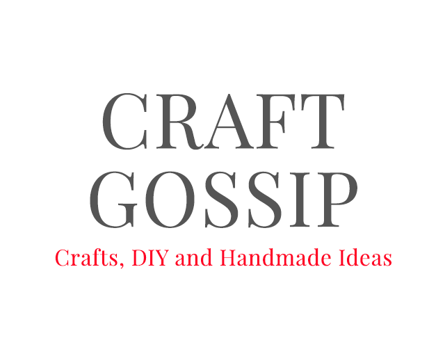
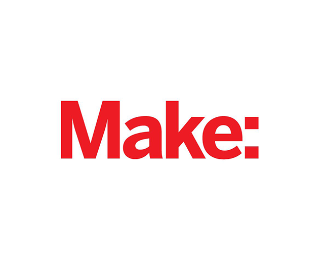
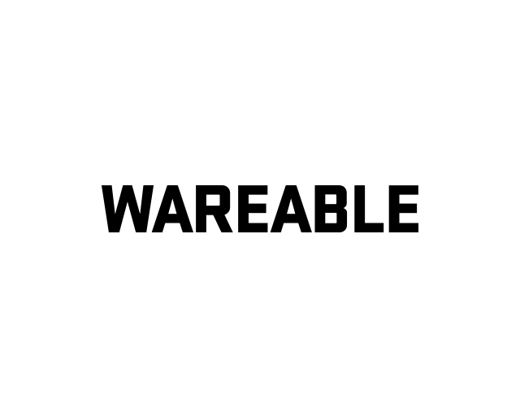
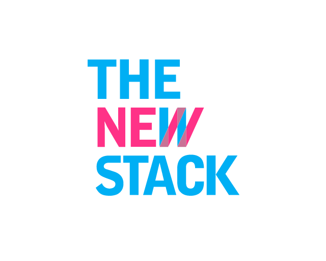
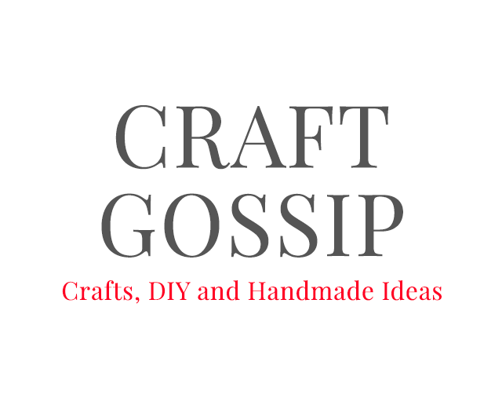

Cyberknitics
A garment that translates the rhythm of knitting into sound - Master’s Thesis

Cyberknitics is the study of the relationship between craft, technology, and humans. Crafting is calming, healing, communal, expressive and empowering. It fills a basic human desire that transcends its utility. My work explores what it means to be a crafter now, and what it will mean in the future.
My project is a harness-like vestment that translates the motion of knitting into sound. As someone who knits, I have become increasingly interested in how to capture and convey the natural rhythm of the craft. The music is meant to inspire a stronger connection between the knitter and their process, and to invite the audience to engage with the spiritual practice of creating something from nothing.
About the Fabrication —
This garment detects the movement of the hand which generates sound. As the wearer knits, they can hear their own rhythm and respond to it. Buttons on the forearm allow the user to alter the sound. The sound produced can be heard through a speaker or headphones.
I constructed the harness and arm-piece from leather, then hand-stitched the components in place. The circuit is composed of a combination of pre-made and custom-designed circuit boards. The design is meant to be modular, flexible, comfortable, and evocative.


Talks & Exhibitions —
Cyberknitics made its first appearances at the ITP Thesis Week 2016 and at the ITP Spring Showcase 2016. It was exhibited at the Fashion Innovation Alliance Fashion + Tech Showcase 2016 in Washington DC, the Internet of Fashion meetup in New York City, and the NYC Media Lab Summit 2016. Cyberknitics received the Editor’s Choice Award at World Maker Faire 2016. Upcoming events include Body Hacking Con 2017.
Select Press —
-
The New Stack
Cyberknitics Translates Knitting into Ethereal Electronic Music -
CraftGossip
Knitting Made Musical with Cyberknitics -
Makezine
The Cybernetics of Knitting -
Wearable Tech Insider
Knit Picking Your Music with Cyberknitics -
Wareable.com
NYC Maker Faire 2016: The best wearable, VR and smart home tech


 






